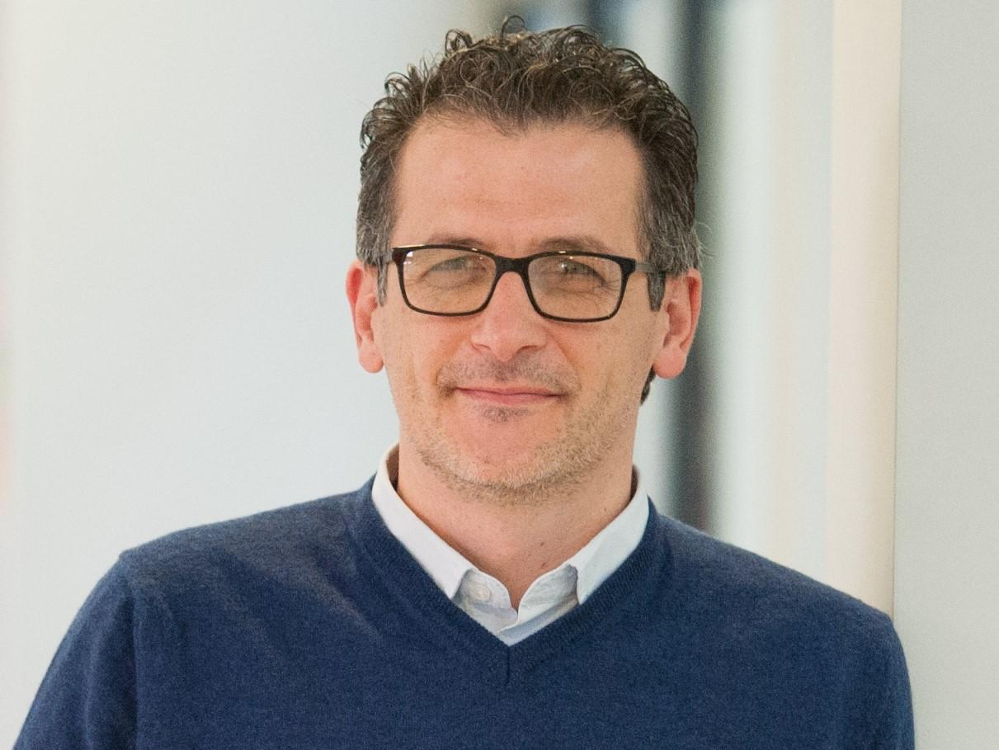
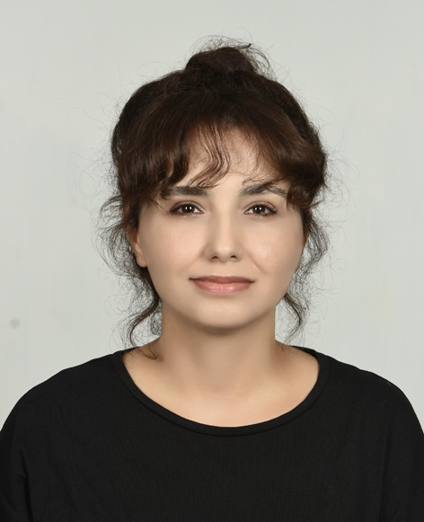
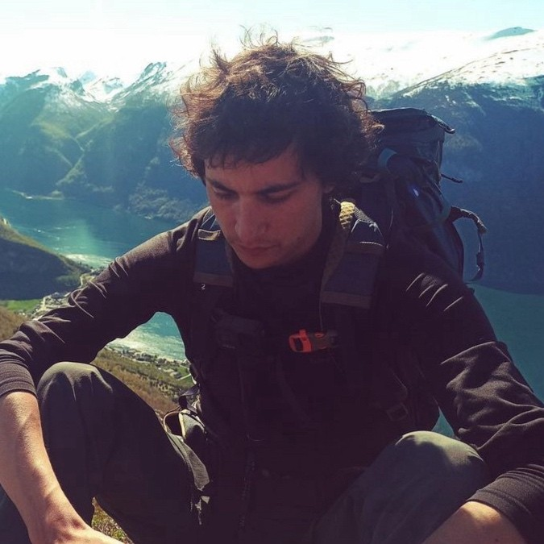

A panel of leading voices
From top universities and global tech companies — researchers and practitioners shaping the future of LLM-based agents for software engineering.

Davide Di Ruscio
Università degli Studi dell'Aquila
Full Professor at the University of L'Aquila, specializing in Software and Model-Driven Engineering. Active researcher, editor, and project lead in areas like domain-specific languages, model evolution, and software recommendation systems.
View bioJie Zhang
King's College London, UK
Dr. Jie M. Zhang is a lecturer of computer science at King's College London. Her main research interests are the trustworthiness of software engineering, AI, and LLMs.
View bioAntonio García Domínguez
University of York, UK
Senior Lecturer at the University of York, specializing in model-driven engineering and software testing, leading AI-agent work in the EU MOSAICO project.
View bio
Jesús M. González Barahona
Universidad Rey Juan Carlos, Spain
Professor at URJC researching software development communities. Co-founder of Bitergia, the software development analytics company.
View bioGiovanni Rosa
Postdoctoral Researcher · URJC
Postdoc at URJC, focusing on GenAI for code generation, mining software repositories, software quality, maintenance and evolution.
View bioMarc Alier
Associate Professor · UPC
Associate Professor at UPC, two decades in teaching, research, and educational management. Author of the Safe AI in Education Manifesto.
View bio
Merve Astekin
SINTEF Digital, Norway
Research Scientist at SINTEF Digital focusing on sustainable AI and energy-efficient software systems, with recent work on LLMs for edge devices and agentic methods.
View bio
Adela Nedisan Videsjorden
SINTEF Digital, Norway
Researcher in sustainable AI, edge AI, and digital twins, with a strong background in NLP and deep learning.
View bioOlivier Perard
Field CTO – EMEA · Oracle EMEA
Computer Engineer with 30+ years experience across utilities, telecom, banking, and insurance. Expert in AI services and predictive models.
View bio
Simeon Tverdal
SINTEF Digital, Norway
Researcher at SINTEF Digital focusing on applied AI, cybersecurity, and risk management.
View bioMario Corchero
Bloomberg
Software engineer and technical leader at Bloomberg, focused on developer experience, automation, and the integration of AI into SE workflows.
View bio
David Naranjo
Software Engineer · Microsoft
Software Engineer at Microsoft working on the modernization of Bing Maps and Search experiences. Co-founder of a platform with 600k+ monthly users.
View bio

{kind=link}
{kind=link}
{kind=link}